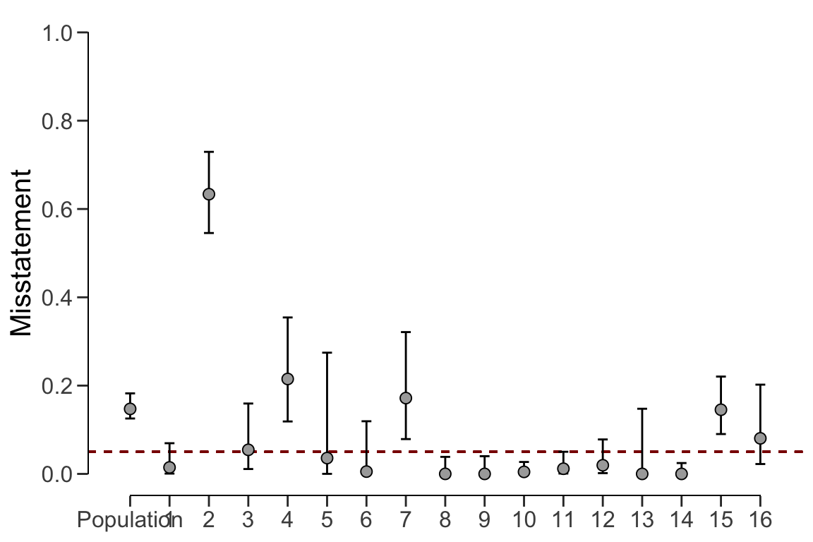
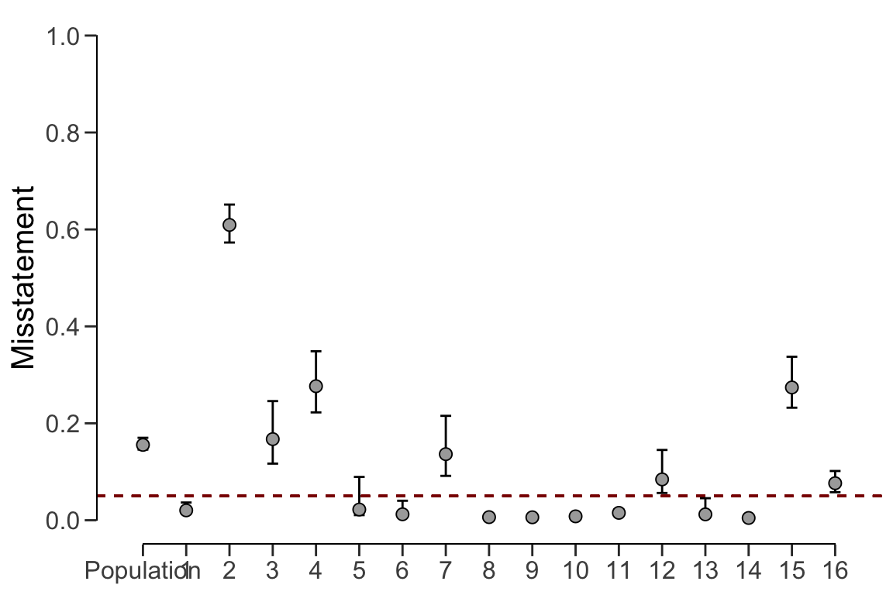
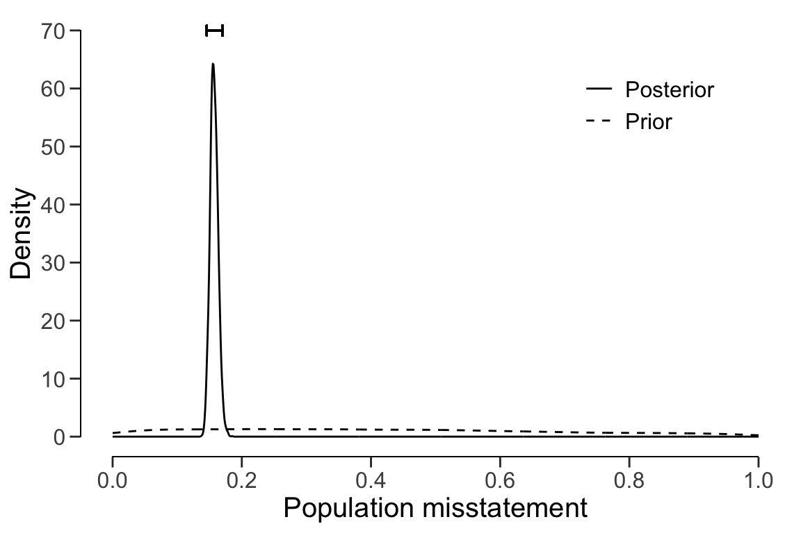

6.4 Evaluation using data
For this example, we take the allowances that set that comes with the package.
This data set contains 3500 financial statement line items, each with a booked
value bookValue and, for illustrative purposes, and audited (true) value
auditValue. Since the focus of this vignette is the evaluation stage in the
audit, the sample is already indicated in the data set. The performance
materiality in this example is set to 5%.
data(allowances)
head(allowances)
#> item branch bookValue auditValue times
#> 1 1 12 1600 1600 1
#> 2 2 12 1625 NA 0
#> 3 3 12 1775 NA 0
#> 4 4 12 1250 1250 1
#> 5 5 12 1400 NA 0
#> 6 6 12 1190 NA 0Evaluating a stratified sample using data requires specification of the data,
values, values.audit and strata arguments in the evaluation() function.
In this case, the units are monetary and calculated by aggregating the book
values of the items in each stratum.
N.units <- aggregate(allowances$bookValue, list(allowances$branch), sum)$x6.4.1 Classical Evaluation
The call below evaluates the allowances sample using a classical stratified
evaluation procedure, in which the stratum estimates are poststratified to
arrive at the population estimate.
x <- evaluation(
materiality = 0.05, data = allowances,
values = "bookValue", values.audit = "auditValue", strata = "branch", times = "times",
alternative = "two.sided", N.units = N.units
)
summary(x)
#>
#> Classical Audit Sample Evaluation Summary
#>
#> Options:
#> Confidence level: 0.95
#> Population size: 16772249
#> Materiality: 0.05
#> Hypotheses: H₀: Θ = 0.05 vs. H₁: Θ ≠ 0.05
#> Method: poisson
#>
#> Data:
#> Sample size: 1604
#> Number of errors: 401
#> Sum of taints: 252.9281046
#>
#> Results:
#> Most likely error: 0.14723
#> 95 percent confidence interval: [0.12549, 0.18239]
#> Precision: 0.03516
#> p-value: NA
#>
#> Strata (16):
#> N n x t mle lb ub precision p.value
#> 1 317200.09 87 6 1.27814 0.01469 0.00073 0.06950 0.05481 0.46285
#> 2 2792814.33 305 233 193.23313 0.63355 0.54558 0.72945 0.09590 0.00000
#> 3 1144231.69 55 3 3.00000 0.05455 0.01105 0.15940 0.10486 0.75827
#> 4 414202.89 70 45 15.05094 0.21501 0.11878 0.35434 0.13933 0.00000
#> 5 96660.53 18 1 0.64537 0.03585 0.00015 0.27456 0.23871 0.59343
#> 6 348006.13 34 1 0.17866 0.00525 0.00000 0.11926 0.11401 1.00000
#> 7 2384079.33 55 14 9.44448 0.17172 0.07885 0.32122 0.14950 0.00058
#> 8 1840399.33 96 1 0.00813 0.00008 0.00000 0.03860 0.03852 0.10355
#> 9 563957.70 92 0 0.00000 0.00000 0.00000 0.04010 0.04010 0.01783
#> 10 3198877.73 201 7 0.92023 0.00458 0.00009 0.02703 0.02245 0.00122
#> 11 1983299.06 128 7 1.50034 0.01172 0.00084 0.05013 0.03841 0.10773
#> 12 319144.13 86 5 1.68141 0.01955 0.00174 0.07806 0.05851 0.46069
#> 13 148905.79 25 0 0.00000 0.00000 0.00000 0.14756 0.14756 0.64187
#> 14 513058.76 150 0 0.00000 0.00000 0.00000 0.02459 0.02459 0.00134
#> 15 432007.61 150 39 21.80000 0.14533 0.09026 0.22045 0.07511 0.00001
#> 16 275403.70 52 39 4.18726 0.08052 0.02237 0.20215 0.12163 0.12258In this case, the output shows that the estimate of the misstatement in the
population is 14.72%, with the 95% confidence interval ranging from 12.55% to
18.26%. The precision of the population estimate is 3.54%. The stratum estimates
can be seen in the output of the summary() function and are visualized below.
plot(x, type = "estimates")
6.4.2 Bayesian Evaluation
Bayesian inference can improve upon the estimates of the classical approach by
pooling information between strata where possible. The call below evaluates the
allowances sample using a Bayesian multilevel stratified evaluation procedure,
in which the stratum estimates are poststratified to arrive at the population
estimate.
x <- evaluation(
materiality = 0.05, data = allowances, prior = TRUE,
values = "bookValue", values.audit = "auditValue", strata = "branch", times = "times",
alternative = "two.sided", N.units = N.units, pooling = "partial"
)
summary(x)
#>
#> Bayesian Audit Sample Evaluation Summary
#>
#> Options:
#> Confidence level: 0.95
#> Population size: 16772249
#> Materiality: 0.05
#> Hypotheses: H₀: Θ = 0.05 vs. H₁: Θ ≠ 0.05
#> Method: poisson
#> Prior distribution: Determined via MCMC sampling
#>
#> Data:
#> Sample size: 1350
#> Number of errors: 401
#> Sum of taints: 224.657517
#>
#> Results:
#> Posterior distribution: Determined via MCMC sampling
#> Most likely error: 0.1555
#> 95 percent credible interval: [0.1458, 0.17009]
#> Precision: 0.014595
#> BF₁₀: 3.1386e+15
#>
#> Strata (16):
#> N n x t mle lb ub precision
#> 1 317200.09 62 6 1.07814 0.02037 0.01356 0.03659 0.01622
#> 2 2792814.33 283 233 176.87807 0.60930 0.57298 0.65128 0.04198
#> 3 1144231.69 55 3 3.00000 0.16735 0.11682 0.24582 0.07847
#> 4 414202.89 48 45 11.65094 0.27653 0.22254 0.34868 0.07214
#> 5 96660.53 9 1 0.21512 0.02207 0.01055 0.08932 0.06725
#> 6 348006.13 14 1 0.04467 0.01233 0.00723 0.04022 0.02790
#> 7 2384079.33 44 14 6.65401 0.13637 0.09156 0.21540 0.07903
#> 8 1840399.33 78 1 0.00813 0.00640 0.00458 0.00961 0.00320
#> 9 563957.70 74 0 0.00000 0.00608 0.00461 0.00957 0.00349
#> 10 3198877.73 184 7 0.89982 0.00804 0.00615 0.01074 0.00270
#> 11 1983299.06 111 7 1.35066 0.01525 0.01077 0.02243 0.00718
#> 12 319144.13 56 5 1.19069 0.08428 0.05625 0.14502 0.06074
#> 13 148905.79 10 0 0.00000 0.01216 0.00636 0.04545 0.03329
#> 14 513058.76 150 0 0.00000 0.00472 0.00377 0.00633 0.00161
#> 15 432007.61 128 39 18.30000 0.27398 0.23217 0.33730 0.06332
#> 16 275403.70 44 39 3.38726 0.07640 0.05784 0.10161 0.02521The output shows that the estimate of the misstatement in the population is
15.66%, with the 95% credible interval ranging from 14.59% to 17%. The precision
of the population estimate is 1.34%, which is substantially lower than that of
the classical approach. The stratum estimates can be seen in the output of the
summary() function and are visualized below.
plot(x, type = "estimates")
The prior and posterior distribution for the population misstatement can be
requested via the plot() function.
plot(x, type = "posterior")